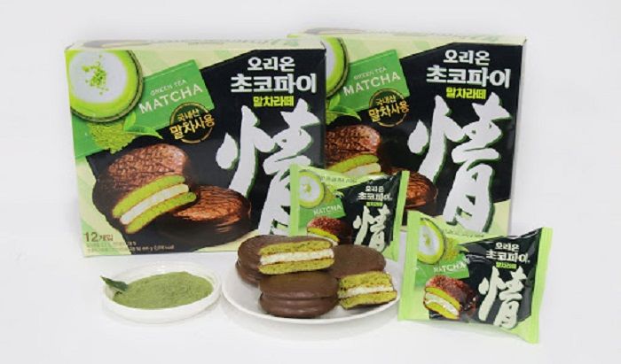
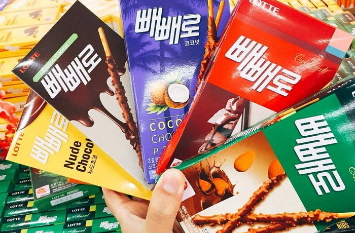
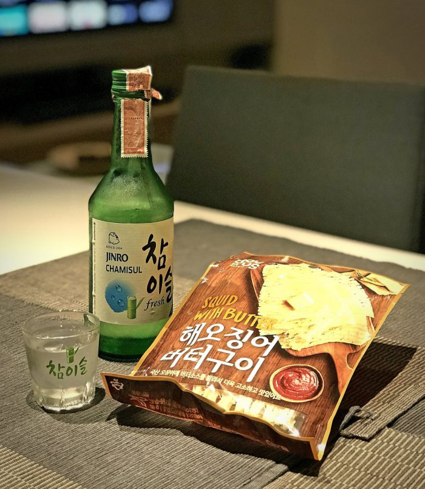

Du lịch Hàn Quốc
Welcome to Korea
Welcome to Korea
Orion Choco Pie là một trong những món ăn vặt nổi tiếng nhất của Hàn Quốc. Có nhiều loại chocopie mang thương hiệu khác nhưng Orion là lựa chọn số một của hầu hết người dân nơi đây. Rất khó để gặp một người Hàn nào không biết về nó. Món ăn vặt tiêu biểu này là một phần không thể thiếu tại xứ sở củ sâm. Đó là một chiếc bánh bông lan màu vàng được phủ lớp socola bên ngoài, kẹp giữa lớp marshallow dẻo bên trong. Giống như Kim chi – đại diện cho ẩm thực xứ Hàn thì Bánh Orion Choco Pie cũng là một món bánh quốc dân, một biểu tượng của đất nước Hàn Quốc. Thứ bánh thần thánh đó có mặt lần đầu tiên tại Hàn vào năm 1974, sau đó phổ biến trên toàn thế giới và xuất khẩu sang Việt Nam kể từ 1995.
Tuy nhiên, để thưởng thức hết thảy những hương vị từ món ăn vặt nổi tiếng Hàn Quốc này thì chỉ đặt chân tới đây, bạn mới cảm nhận hết mùi vị thơm ngon khó cưỡng. Bao gồm nhiều loại khác nhau từ dâu tây, matcha, chuối,… đến các hương vị độc đáo như hoa anh đào, dưa hấu,… Nếu thử, chắc chắn bạn sẽ bị “nghiện” đấy!.
Nếu là một fan “trung thành” của socola thì peppero chính là món nhất định bạn phải thử khi đi du lịch Hàn Quốc. Khác với những chiếc bánh quy thông thường, món ăn vặt Hàn Quốc ngon này được làm thành dạng que nhỏ độc đáo. Những chiếc bánh que phủ socola đen thơm ngon, socola sữa béo ngậy, một chút bơ đậu phộng,…thật hấp dẫn. Nó trở thành món khoái khẩu của người dân xứ sở kim chi. Đặc biệt, loại bánh pepero được bày bán rầm rộ vào ngày 11/11 hàng năm – được coi là ngày Valentine của Hàn Quốc.
Theo kinh nghiệm tìm hiểu các món ăn vặt Hàn Quốc, vào ngày này, mọi người thường bày tỏ tình cảm của mình với người yêu, bạn bè, người thân qua những “chiếc gậy” phủ socola độc đáo. Ngoài ra, giới trẻ Hàn quan niệm: ăn chiếc những bánh pepero vào 11 giờ 11 phút, ngày 11 tháng 11 để được thon thả như hình dạng của nó. Những chiếc pepero nhỏ gọn mang đến cho bạn nhiều trải nghiệm thú vị. Bạn cũng có thể mang theo dễ dàng trong cuộc hành trình khám phá Hàn Quốc hay mua về làm quà cho những người thân yêu.
Sẽ thật thiếu sót nếu du lịch xứ Hàn mà không thử bánh Chocolate Corns (bánh bắp socola). Đây là một trong những món ăn vặt Hàn Quốc phổ biến, được nhiều người ưa chuộng. Những viên bắp giòn tan, tẩm ướp thêm socola đậm vị chắc chắn sẽ làm bạn thích mê. Nhâm nhi cả ngày cũng không muốn ngừng. Mua sẵn vài gói để đem theo trong khi đi du lịch chính là sự lựa chọn tuyệt hảo. Bạn hãy tìm cho mình thứ bánh ngon hấp dẫn này nhé!
Nếu là người mê đồ ăn vặt Hàn Quốc, bạn đừng bỏ lỡ khô mực cay, ngon “hết sảy” này. Nó được xem là món ăn khoái khẩu của nhiều người. Nhiều khách du lịch đến với Hàn Quốc cũng thường mua vài gói mực để dành thưởng thức hoặc mua về làm quà. Từng miếng khô mực được tẩm ướp nhiều loại gia vị cay chắc chắn sẽ làm thức tỉnh vị giác của bạn.

Bánh trứng sữa Lotte’s Happy Promise chính là sự lựa chọn tuyệt đỉnh của những tín đồ hảo ngọt. Những chiếc bánh vàng ươm, mềm mịn kết hợp vị béo ngậy, thơm ngon của bơ, hòa quyện cùng nhân trứng dẻo, mềm chắc chắn làm mê lòng du khách. Nhâm nhi cùng với các loại trà truyền thống trên chính đất nước Hàn Quốc sẽ đem đến cho bạn những trải nghiệm thú vị.
GỢI Ý TOUR DU LỊCH HÀN QUỐC |
|---|
>> Du Lịch Hàn Quốc: Hà Nội – Seoul – Lotte World – Trượt Tuyết Jangjipine 5 Ngày Trượt Tuyết Bay Jeju Air chỉ với 12.500.000 đồng
|
Trên đây là danh sách các món ăn vặt Hàn Quốc phát cuồng du khách. Không chỉ dừng lại ở 5 món ăn này. Bạn hãy đến để khám phá hết rồi chia sẻ với chúng tôi nhé. Đừng quên theo dõi tin tức du lịch Hàn Quốc mỗi ngày tại dulichvietnam.com.vn.
Top 20 điểm tham quan nhất định phải ghé thăm trong hành trình chinh phục Seoul

Điện thoại: 0903357616
Email: thaontps24690@fpt.edu.vn